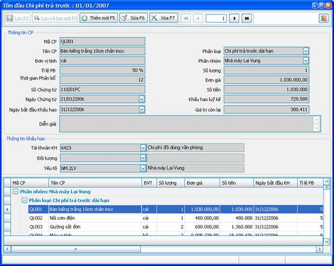
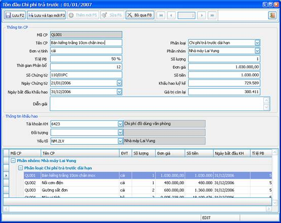

Mục Tồn đầu chi phí trả trước có chức năng lưu giữ thông tin đầu kỳ của từng Chi phí trả trước trong module Kế toán.
Chỉ phải nhập liệu số liệu cho kỳ kế toán đầu tiên khi bắt đầu sử dụng VES, số tồn của các kỳ sau VES sẽ tự tính toán dựa trên số liệu phát sinh.
Từ menu “Tồn đầu” của chương trình Kế toán, chọn “Tồn đầu chi phí trả trước”.
Thông tin quản lý:
Thông tin về mỗi chi phí trả trước bao gồm:
- Mã chi phí
- Tên chi phí
- Đơn vị tính.
- Phân nhóm: Chi phí trả trước thuộc chi nhánh nào.
- Phân loại: phân loại Chi phí theo chuẩn kế toán.
- Tỉ lệ phân bổ.
- Thời gian phân bổ: số tháng phân bổ chi phí theo tỉ lệ phân bổ trên.
- Số chứng từ.
- Ngày chứng từ.
- Số lượng.
- Đơn giá.
- Số tiền.
- Ngày bắt đầu khấu hao.
- Khấu hao lũy kế.
- Giá trị còn lại.
- Diễn giải.
- Thông tin khấu hao (Tài khoản, đối tượng, yếu tố): là các thông tin cần khi định khoản trích khấu hao hàng tháng cho Chi phí trả trước đó.
Các cửa sổ của nghiệp vụ:
Ø Cửa sổ chính:

Hình 1
Đây là danh sách số liệu thông tin đầu kỳ của các Chi phí trả trước.
Các thao tác:
- Bạn có thể di chuyển con trỏ ở lưới bên dưới để xem thông tin của từng Chi phí trả trước.
- Click “Thêm mới” để thêm 1 Chi phí trả trước vào số liệu đầu kỳ.
- Click “Sửa” để sửa lại 1 thông tin đã có sẵn.
- Click “Xóa” để xóa đi 1 Chi phí trả trước trong số liệu đầu kỳ.
Ø Cửa sổ nhập liệu:
Từ cửa sổ chính, bạn có thể click vào nút “Sửa” để thay thông tin 1 Chi phí trả trước đã có, hoặc click “Thêm mới” để thêm 1 Chi phí trả trước:

Các thao tác:
- Nút “Bỏ qua”: click vào nút này sẽ phục hồi lại số liệu ban đầu, bỏ qua những thay đổi mà bạn đã thực hiện.
- Nút “Lưu”: click vào nút này để lưu lại thông tin bạn đã nhập.
- Nút “Lưu và tạo mới”: click vào nút này để lưu lại thông tin bạn đã nhập và thêm mới 1 Chi phí trả trước.